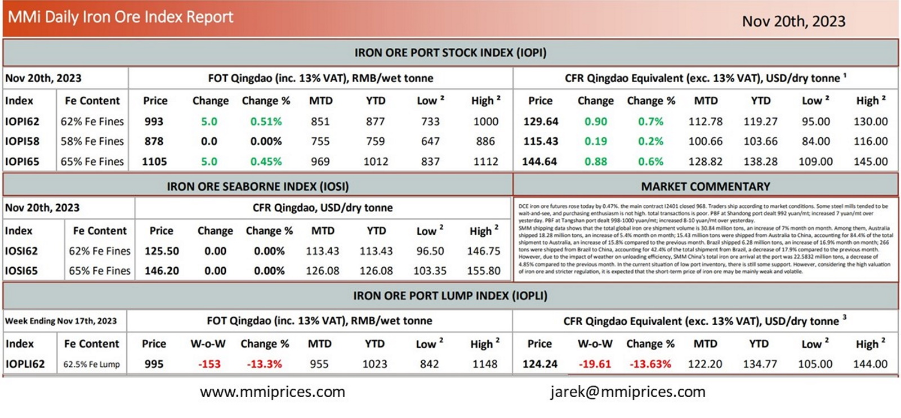

DCE iron ore futures rose today by 0.47%. the main contract I2401 closed 968. Traders ship accordingto market conditions. Some steel mills tended to be wait-and-see, and purchasing enthusiasm is not high. total transactions is poor. PBF at Shandong port dealt 992 yuan/mt; increased 7 yuan/mt over yesterday. PBF at Tangshan port dealt 998-1000 yuan/mt; increased 8-10 yuan/mt over yesterday. SMM shipping data shows that the total global iron ore shipment volume is 30.84 million tons, an increase of 7% month on month. Among them, Australia shipped 18.28 million tons, an increase of 5.4% month on month; 15.43 million tons were shipped from Australia to China, accounting for 84.4% of the total shipment to Australia, an increase of 15.8% compared to the previous month. Brazil shipped 6.28 million tons, an increase of 16.9% month on month; 266 tons were shipped from Brazil to China, accounting for 42.4% of the total shipment from Brazil, a decrease of 17.9% compared to the previous month. However, due to the impact of weather on unloading efficiency, SMM China’s total iron ore arrival at the port was 22.5832 million tons, a decrease of 4.85% compared to the previous month. In the current situation of low port inventory, there is still some support. However, considering the high valuation of iron ore and stricter regulation, it is expected that the short-term price of iron ore may be mainly weak and volatile.

Download PDFSource: Metals Market Index (MMi)